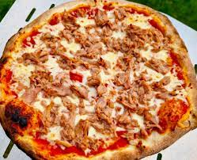

Tuna Pizza Recipe

Description
This recipe will let you make a yummy Tuna Pizza
quickly! This recipe uses a pre-made pizza crust.
Ingredients
- 1 (8 ounce) package cream cheese, softened
- 1 (14 ounce) package pre-baked pizza crust
- 1 (5 ounce) can tuna, drained and flaked
- 1 (12 ounce) package tomato sauce, pre-made
- ½ cup thinly sliced red onion
- 1 ½ cups shredded mozzarella cheese
- crushed red pepper flakes, or to taste
Steps
- Preheat an oven to 400 degrees F (200 degrees C).
- Spread the pre-made tomato sauce and then the softened cream cheese on
the pre-baked crust.
- Sprinkle the tuna and onions over the pizza.
- Top with shredded mozzarella cheese and optional red pepper flakes
- Bake in preheated oven until the cheese has melted and started to brown,
about 15 to 20 minutes.